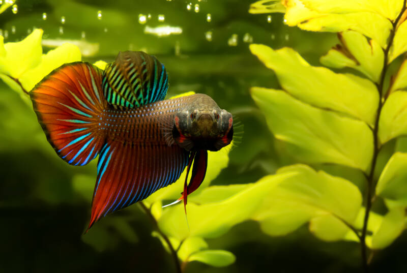

Betta fun facts

Did you know that bettas can survive out of water for a prolonged period of time? This is because they jump from rice paddy
to padddy in the wild. This is why you should ALWAYS have a lid on your tank. Your betta can jump out and possibly die
Domestic bettas are more aggresive. After years of selective breeding, domestic bettas slowly became more aggresive
Betta fighting is a sport. Like cockfighting, this game involves the males fighting to the death and is just as cruel as
you imagine
Bettas can learn tricks! Just like dogs, bettas are fun and playful, and can be taught to swim through hoops, follow your
finger, and even jump out of the water on command!